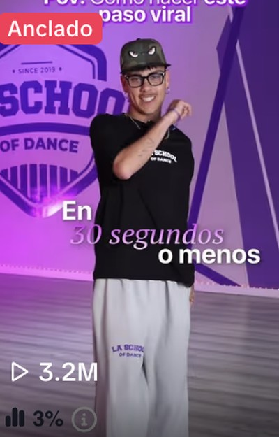
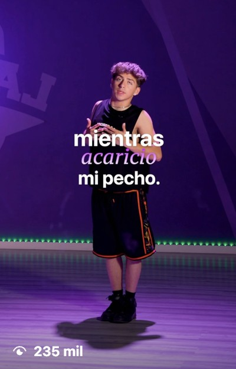
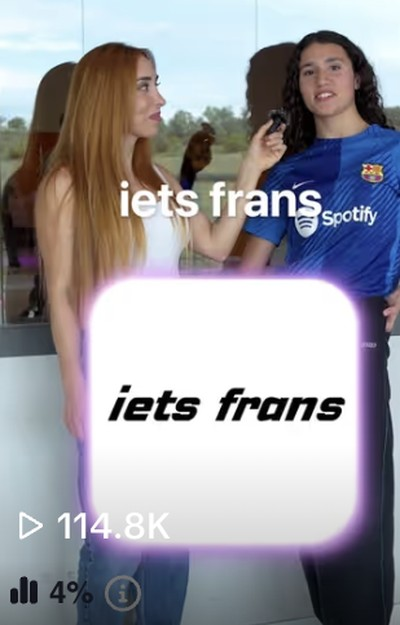
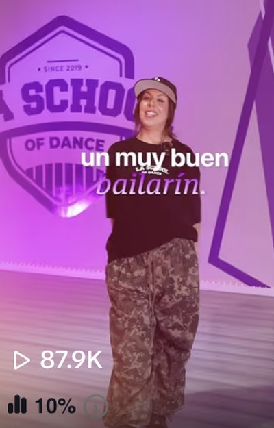
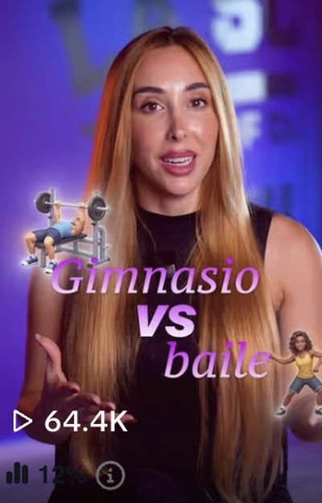

Antes de trabajar con nosotros, La School of Dance publicaba vídeos de forma irregular, con una persona dedicada al contenido a media jornada y con resultados que dependían mucho de que un vídeo concreto tuviera suerte.
En abril de 2026 empezamos a llevar su contenido y, en solo dos meses, sus vídeos superaron los 8 millones de visualizaciones entre Instagram y TikTok, con una dedicación por su parte de dos o tres horas al mes.
En este artículo te contamos cómo gestionaban el contenido antes, qué cambiamos en la estrategia y qué resultados consiguió la escuela en esos dos primeros meses.
Qué es La School of Dance
La School of Dance es una escuela de baile de Manresa, dirigida por Laia Tébar, que está especializada en danza urbana y que, de forma complementaria, también ofrece clases de salsa, bachata y otras actividades. Es una escuela muy conocida en Manresa y alrededores, y también dentro del mundo del baile en Cataluña y a nivel nacional.
Cómo gestionaban el contenido antes
Cuando empezamos a trabajar juntos, la escuela tenía a una persona contratada a media jornada, que se encargaba de crear el contenido para sus redes sociales.
A diferencia de muchos negocios con los que empezamos a trabajar, que todavía suben únicamente fotos en su Instagram, ellos ya apostaban por el formato vídeo. El vídeo suele ser el formato que mejor funciona para generar un gran impacto, pero no todos los vídeos valen.
Lo que hacían era publicar sobre todo vídeos de baile, resúmenes de los cursos y, de vez en cuando, algún vídeo que generaba mucho interés, como uno en el que explicaban cuánto cuesta montar una escuela de baile en una nave industrial y que superó las 100.000 visualizaciones.
En general, los vídeos de baile pueden funcionar bien siempre que se vean como un complemento: enseñan el nivel de la escuela y nutren a quien ya te sigue, pero no son los que captan a gente nueva. Para eso hacen falta vídeos que generen mucho impacto.
Cuando vimos el punto en el que se encontraban, identificamos tres aspectos que encajaban perfectamente con lo que buscamos mejorar con nuestro servicio:
- Ahorrar tiempo. Crear el contenido les ocupaba demasiado: cuando se graba un poco cada día en lugar de concentrarlo todo en una jornada, el trabajo nunca acaba de cerrarse y además se pierde mucha eficiencia.
- Dar regularidad al contenido. Había meses con dos o tres vídeos y otros con muchos más, y en redes sociales la constancia influye mucho en los resultados.
- Conseguir visitas cualificadas. No solo más visualizaciones, sino que esas visualizaciones llegaran a personas que pudieran acabar apuntándose a la escuela.
Tener a alguien en plantilla o trabajar con una agencia
El caso de La School of Dance nos sirve para hablar de una duda que se plantean muchas empresas: si es mejor contratar a una persona para que lleve el contenido o trabajar con una agencia externa.
Tener a alguien en plantilla tiene ventajas:
- Conoce el negocio desde dentro. Pasa muchas horas en el negocio y entiende bien cómo funciona.
- Está al tanto de cada novedad. Sabe en cada momento qué ocurre y puede reflejarlo en el contenido.
- Tiene disponibilidad diaria. Puede grabar o publicar cualquier día sin tener que planificarlo con antelación.
Ahora bien, todo esto también se puede conseguir con una agencia. El conocimiento del negocio se adquiere con un buen onboarding y trabajando de cerca con el cliente, algo que hacemos con todos los sectores con los que trabajamos para conocerlos al máximo. Y en cuanto a la cercanía, todos nuestros clientes consideran que somos una persona más de su equipo.
Por otro lado, tener a una persona en plantilla también tiene sus inconvenientes:
- Un horario limitado. Si surge algo fuera de sus horas de trabajo, no está disponible, mientras que una agencia suele estar pendiente en todo momento.
- Se da por hecho que domina todas las áreas. Crear contenido implica saber buscar ideas, escribir guiones, grabar y editar, y es muy difícil que una sola persona sea realmente buena en todas esas tareas a la vez.
- Un coste fijo y más riesgo. Contratar a alguien supone un coste laboral fijo y el riesgo que conlleva cualquier contratación, algo que desaparece cuando trabajas con una agencia.
- Depende de una sola persona. Si se pone enferma, se va de vacaciones o deja la empresa, el contenido se para y hay que volver a empezar de cero.
- Una única mirada. Una persona solo conoce su negocio, mientras que una agencia trabaja con muchos sectores y puede aplicar ideas y formatos que ya han funcionado en otros.
- Más difícil mantenerse al día. Las redes sociales cambian muy rápido, y una sola persona tiene menos tiempo para formarse y probar lo que funciona en cada momento.
Resultados de los dos primeros meses
Cuando empezamos a trabajar su contenido, aplicamos la metodología que seguimos con todos nuestros clientes, basada en lo que mejor nos funciona, junto con una estrategia personalizada para el objetivo de la escuela.
En sus dos primeros meses de trabajo, el contenido de La School of Dance superó los 8 millones de visualizaciones entre Instagram y TikTok.
Una parte importante de ese alcance llegó gracias a un vídeo en el que explicábamos paso a paso un baile que se había hecho viral en ese momento. Era una tendencia que encajaba perfectamente con la escuela, la aprovechamos y el vídeo llegó a muchísimas personas: superó los 3 millones de visualizaciones en TikTok y las 787.000 en Instagram.

No fue el único vídeo que funcionó. Otros, como los hábitos para mejorar como bailarín o la comparación entre el gimnasio y el baile, también tuvieron muy buenos resultados: en Instagram llegaron a las 235.000 visualizaciones y en TikTok a las 153.700.




Este caso también ayuda a entender por qué siempre publicamos el mismo vídeo en Instagram y en TikTok. Hay vídeos que funcionan mejor en una plataforma y otros en la otra, y uno de los vídeos de la escuela que tuvo un alcance discreto en Instagram se multiplicó varias veces en TikTok. Publicar en las dos es, al final, abrir una vía más para llegar a nuevos alumnos.
Beneficios para la escuela
El primer beneficio fue el aumento del tráfico. Millones de personas descubrieron la escuela, y no solo de la zona de Manresa, ya que el contenido tuvo mucha repercusión a nivel nacional e incluso en Latinoamérica.
Ese alcance se tradujo en nuevos alumnos para la escuela, pero también en algo con mucho valor a largo plazo: una audiencia acumulada. Para una escuela de baile, contar con una comunidad interesada en todo el país y fuera de él abre la puerta a lanzar en el futuro un curso online o cualquier otro producto digital y poder vendérselo a esa audiencia.
El segundo beneficio fue el ahorro de tiempo, ya que la escuela pasó de ir creando contenido un poco cada día a concentrarlo todo en una mañana cada dos meses.
El tercero fue la imagen. Antes de apuntarse a una escuela, la mayoría de personas consulta sus redes sociales, y si lo que ven transmite profesionalidad, la decisión es mucho más sencilla. Por eso, además de plantear bien cada vídeo a nivel estratégico, cuidamos mucho la calidad de la grabación y de la edición.
Y el cuarto fue la constancia. Antes había meses con dos o tres vídeos y otros con muchos más; con el pack Básico, la escuela publica 8 vídeos al mes de forma regular, algo clave en redes sociales, donde la constancia influye mucho en los resultados y en que la gente acabe recordándote.
Conclusión
El caso de La School of Dance muestra que tener a alguien en plantilla subiendo vídeos no es lo mismo que tener una estrategia de contenido detrás. La escuela ya publicaba vídeos, pero crear el contenido le ocupaba mucho tiempo y los resultados dependían de la suerte. Con una publicación constante, guiones pensados para su público y tendencias que encajaban con la escuela, superó los 8 millones de visualizaciones en dos meses, consiguió nuevos alumnos y construyó una audiencia a nivel nacional, con solo dos o tres horas de dedicación al mes.
Esa es la diferencia entre una persona en plantilla y una agencia: un equipo que domina cada fase del contenido, sin depender de una sola persona, sin coste fijo y sin que tengas que invertir tú tu tiempo. Si hoy dedicas horas, o un sueldo, a un contenido que no te trae clientes, quizá sea el momento de plantearte otro enfoque.
Si quieres ver un caso en un nicho muy distinto, puedes leer el de Gisela Jorba, una micropigmentadora que pasó de 6.000 a 24.400 seguidores, duplicó su lista de espera y lanzó su formación con más de 50 ventas.
Y si estás pensando en dar el paso con tu negocio, cuéntanos tu proyecto y vemos juntos por dónde empezar.
Preguntas frecuentes
¿Funciona Instagram para una escuela de baile?
Sí. En el caso de La School of Dance, el contenido superó los 8 millones de visualizaciones en dos meses entre Instagram y TikTok. La clave está en combinar los vídeos de baile con contenido que aporte valor, como tutoriales, consejos o errores habituales, y en aprovechar las tendencias que encajan con la escuela.
¿Es mejor contratar a una persona para el contenido o a una agencia?
Depende de cada negocio. Una persona en plantilla conoce bien la empresa, pero tiene un horario limitado y es difícil que domine a la vez las ideas, los guiones, la grabación y la edición. Una agencia aporta un equipo especializado en cada fase, sin coste laboral fijo y con menos riesgo.
¿Cuánto tiempo dedicaba la escuela a su contenido?
Entre dos y tres horas al mes. En una sola mañana de grabación, de unas cinco o seis horas, se preparaba el contenido de dos meses, y Mediatic se encargaba de la estrategia, las ideas, los guiones, la edición y la publicación.
¿Por qué publicar el mismo vídeo en Instagram y en TikTok?
Porque cada plataforma tiene su propio público y su propio algoritmo. Hay vídeos que funcionan mejor en Instagram y otros en TikTok, y a veces un vídeo con un alcance discreto en una plataforma se multiplica en la otra. Publicar en ambas es abrir una vía más para llegar a nuevos clientes.